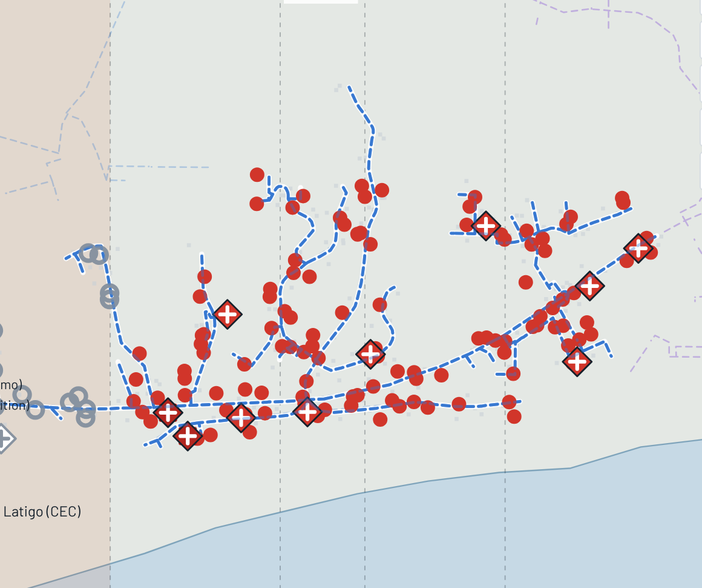
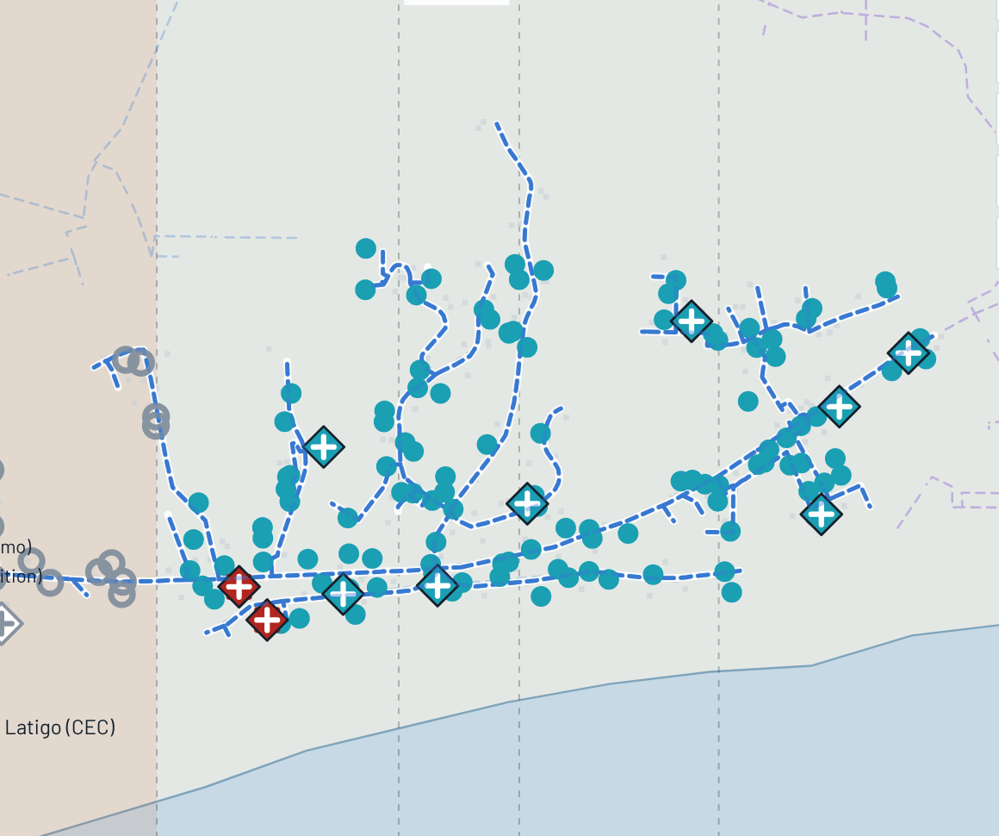

The disaster layer for a home-battery fleet: PowerUP plans each home's backup before a wildfire shutoff, Interlock guards every order, and neighbors share one island behind SCE's switch.
16 shutoffs since 2019, 435 hours dark (real SCE records): once at RAR8848, 15 times the whole circuit. Upstream, a 66 kV line into Latigo runs about 650 m inside the Bryson perimeter.
Every order, from any sender, passes eight checks (signature, freshness, each home's backup floor, circuit headroom and more) and gets the gentlest safe rung: run, clamp, canary at 1% then 10%, hold, or hand to a person.
It can only shrink, slow or stop an order, never create one. PowerUP's own orders pass through it too, and the reserve PowerUP plans for each home becomes the floor Interlock keeps against every sender.


Simulated failures on the real timeline: a stolen key, a replayed order, a sell-down three hours before the shutoff, export onto the dead line, a recharge rush and SCE's own emergency event. 189 battery homes (160 free + 29 their own, assumed share). PowerUP's own orders held: 0 of 5. Reproduce: node pilot/app/cli.mjs.
160 free Base Core batteries in volunteer homes, Medical Baseline first, then solar roofs. When SCE opens RAR8848, the 456 homes run as one island on them and the solar. They carry all 16 real shutoffs (15 of 16 with smoke).
$9.99 a month buys emergency power for a home with no battery (226 homes, assumed 90% opt-in). $1.20 per kWh in a shutoff for everyone on the island, twice SCE's top rate (assumed), billed by SCE; sellers get $1.00.
Funding DOE SBIR (Office of Electricity, CESER) first, DOE GRIP with SCE to scale, FEMA HMGP after a disaster. Built: an installation pack for Naval Base Ventura County.
Global Australia's bushfire shutoffs and life-support register; South Africa's load shedding, with clinics in the medical role. Built: region policy packs.
| Line | Label | $ / year |
|---|---|---|
| Trading, CAISO prices for SCE | real prices | 334 |
| Capacity payments | assumed | 941 |
| Emergency grid events | assumed count | 627 |
| Subscriptions | assumed opt-in | 169 |
| Shutoff power sales | assumed rates | 90 |
| Holding full from SCE's notice | real prices | −28 |
Fleet about $2.24M after the 30% tax credit (installed cost assumed), about $341,000 a year. Payback 6.6 years with all income, 25 without capacity and event pay, 46 on trading alone.
Misuse: locking owners out of their batteries, a single point of attack, or pricing power up mid-crisis. Limits: Interlock never goes below a home's own backup, PowerUP sees a priority tier not a medical record, a person approves every restart and island, and the price is fixed in advance.